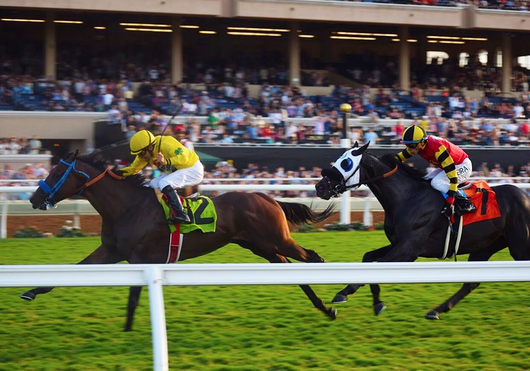

RETURN TO SITE
Del Mar Thoroughbred Club
Social Media Internship
From June of 2017 through January of 2018 I worked for MeadsDurket, an agency in San Diego. From June to August I worked in house creating content for our biggest client, Del Mar Racing. I created countdown videos and content for our summer season, edited photos, and wrote copy. I continued to work for MeadsDurket as a remote part-time intern not only working on Del Mar social but San Diego Symphony as well.
Instagram Stories
A role that I initiated was the development of "Weekend Ahead" Instagram stories. The stories are a hybrid of work created in Photoshop, After Effects, and Instagram in order to present information in an appealing way. This was a highly iterative process with the client, and the end result had impressive reach.


Fall Countdown
Fall Season 2017 was an exciting one for Del Mar as they hosted the Breeders' Cup for the first time in history. The world's eyes were on the track so our content had to be spot on. I designed and executed our Fall Season countdown videos, a series of six videos using sourced footage that I edited in After Effects. As is the nature of short form content, the videos had to be produced quickly in a way that was easy to repeat.